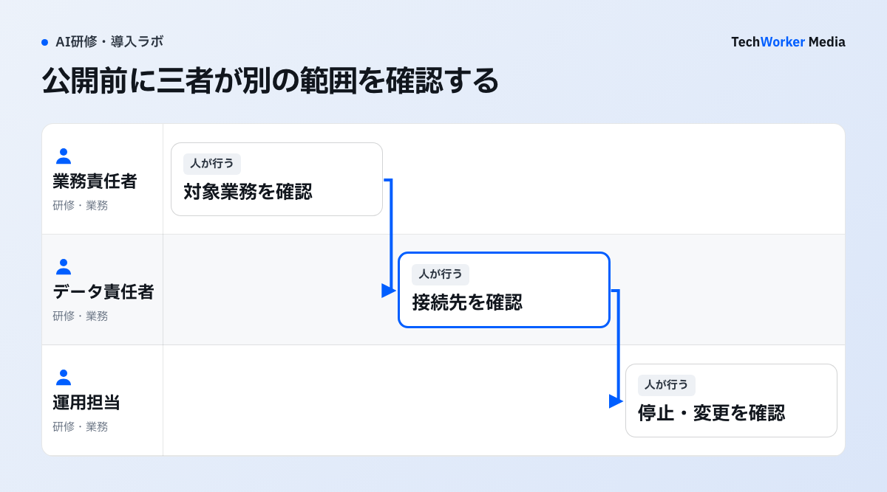

現場がエージェントを作れるようになると、社内データへの接続や公開後の管理も必要になります。「作れる人」と「公開を認める人」を曖昧にしないために、Copilot Studioの公式文書を基に、導入前に決める担当と手順を確認します。
作成・公開・管理の責任を分ける
“Copilot Studio follows a number of security and governance controls and processes.”
公式文は、地理的なデータ所在地、DLP、環境ルーティングなどを統制項目として挙げています。作成機能を開放する前に、環境、接続、公開承認、所有者を決めます。
Copilot Studioを現場へ開放するとき、最低限どの統制が必要ですか？
環境、データ接続、公開承認、運用所有者、停止手順を公開前に決めます。
操作演習は『作成→テスト→公開申請→運用確認』を一続きにします。作成数ではなく、拒否テストの結果、承認記録、所有者、停止手順がそろったかで判定します。
Copilot Studioの統制は、どんな手順で整えますか？
環境を分け、DLPで接続を決め、三者で公開を承認し、公開後に月次で確認し、最初の30日の記録を残します。

公開票には、環境、利用者グループ、知識ソース、アクション、公開チャネル、停止担当を並べます。接続先や公開先が変わる場合は、前回の承認で済ませず、変更した項目を三者へ戻します。
- 試作・検証・本番を別の約束にします。試作環境は、学習用の架空データと許可済みコネクタに限定し、利用者を少人数にします。評価するのは、回答の正しさだけではありません。どの知識ソース・アクション・HTTP接続を使いたいのかも見ます。検証環境では、実データを最小化したテストケース、想定外入力、失敗時のメッセージ、ログの見方を確認します。本番環境では、所有者、対象利用者、停止条件、変更責任者を明記してから公開します。
- DLPで、データが動き得る範囲を決めます。確認するのは、エージェントが何を答えるかだけではありません。知識ソース、コネクタ、スキル、HTTP要求、公開チャネルの組み合わせが、どこへデータを動かし得るかです。許可するコネクタを環境別に決め、業務上の理由がない接続は、最初から使えない状態にします。
- 公開承認を三者で行います。承認者は、業務オーナー、データの責任者、運用担当に分けます。業務オーナーは「誰の何を早くするか」を確認します。データ責任者は「何を接続しないか」を確認します。運用担当は「停止と変更を誰が行うか」を確認します。承認対象は、エージェント名だけにしません。環境、利用者グループ、知識ソース、アクション、公開チャネル、評価結果、ロールバック手順を、一組で記録します。
- 公開後は月次で確認します。見るのは、利用者の種類、失敗・エスカレーション理由、接続追加申請、DLP警告、所有者不明のエージェントです。使われない場合は、機能を足す前に、利用者と意思決定を見直します。
- 最初の30日で運用記録を残します。公開日、責任者、利用者グループ、接続先、承認したDLP、評価用質問、停止条件を、一枚にまとめます。変更時は、差分と承認者を追記します。
Copilot Studioの統制で、うまくいかない例にはどんなものがありますか？
DLPだけで済ませる、利用回数だけを見る、他社の成果を自社の目標にする、設定で適法性まで保証する、が典型です。
- DLPを禁止語のように扱う。DLPは、データ移動の境界です。公開承認の代わりにはなりません。
- 許可リストで、必要な接続まで黙って止める。許可リスト（allowlist）は安全策ですが、業務上必要な接続まで止める設定ではありません。高度なコネクタポリシーを使う場合は、既存の接続や業務フローへの影響を、検証環境で先に調べます。
- アクセス条件の細かい領域を、1つのエージェントに寄せる。たとえば人事のFAQエージェントです。試作では公開情報だけ、検証では匿名化した問い合わせ例だけ、本番では承認済みの人事ナレッジだけを接続します。退職予定者や健康情報のような領域は、先に利用ケースを分けるほうが説明しやすくなります。Microsoftのzoned governanceも、目的とリスクに応じて環境とポリシーを分ける考え方を示しています。
- 他社の成果を、自社の目標に置き換える。MicrosoftはRegal RexnordのCopilot Studio事例を紹介しています。製造業でエージェント利用を進める一例です。他社の導入速度や効果は、自社の目標に置き換えられません。自社では、小さな一業務から始めます。誤答時に人へ戻せるか、変更を誰が承認するかを確認します。
- 利用回数だけを見る。誤答から人へ戻れた件数と、業務オーナーが採用した成果物を、分けて見ます。
- 所有者が異動したエージェントや、利用者のいないエージェントを放置する。
- DLPを通ったことを、個別の承認の代わりにする。DLPに通っても、個別の契約、保存期間、権限設計、回答品質の承認は済んでいません。設定だけでは、安全も適法性も保証できません。
Microsoftの機能は変更され得ます。特に高度なコネクタポリシーは許可リスト方式で、反映時間や既存接続への影響を、事前に検証する必要があります。公開範囲を広げる前に、実際のデータ分類と運用責任を、組織内で確定してください。
環境・DLP・公開・運用の4つの境界で、何を決めればよいですか？
環境は本番へ移す前、DLPは接続を追加する前、公開は利用者へ見せる前に決め、運用は公開後も続けます。
| 境界 | 決めること | 承認の目安 |
|---|---|---|
| 環境 | 試作・検証・本番のデータと作成者 | 本番へ移す前 |
| DLP | 接続可否、知識ソース、HTTP・スキルの範囲 | 接続を追加する前 |
| 公開 | 利用者、チャネル、所有者、停止条件 | 利用者へ見せる前 |
| 運用 | 変更、ログ確認、定期レビュー | 公開後も継続 |
次の一歩は何から始めればよいですか？
小さな一業務を選び、試作・検証・本番の環境を分けて、公開承認の三者を決めることから始めます。
- 小さな一業務を選び、環境を試作・検証・本番に分けます。
- 環境別に、許可するコネクタを決めます。
- 業務オーナー、データ責任者、運用担当を決めます。
自社の業務に合わせた設計は、Copilot Studio導入・ガバナンス設計相談をご利用ください。環境分離、DLP、公開承認を扱います。
出典と確認範囲
確認日：2026年10月6日。製品仕様・制度は更新されるため、導入時はリンク先の最新版を再確認してください。海外の制度・職業規範は日本へ直接適用せず、相違点と限界を本文に明記しています。